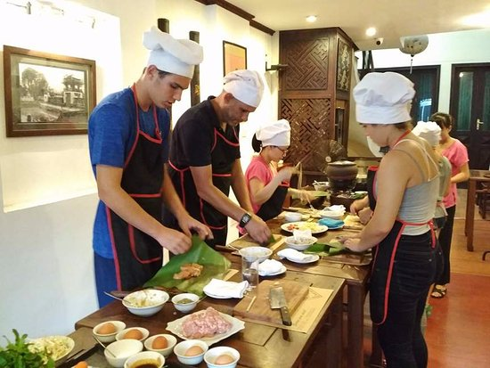

Our Story
"I wanted to share my family's love of cooking with the world!"
-Vinni Guan, Founder
Christie and Chris Guan were married in a small town outside of Madison, Wisconsin in 1965. Soon after, the couple opened there first restaurant "Christi and Chris's Asian Cuisine" in Middleton, Wisconsin. In 1975, the couple gave birth to Christie and Chris's founder, Vinni Guan.
"My entire childhood was spent working in that restaurant, that's where I really developed my love of cooking. Everybody in the town loved the restaurant, and it was very successful. It showed me that food has the power of bringing people together. As I grew older, I wanted to share my family's love of cooking with the world."
After Vinni graduated from Purdue in 2013, she went to work in some of the highest rated restaurants in Chicago, but she never forgot about her family's small town restaurant, despite its closing in 1990.
In early summer 2001, Vinni decided to open her own company offering products and services for amateur cooking activities. She founded Christie and Chris's Cooking Cabin to honor her parents and the restaurant that taught her so much.
Click here to view our company timeline!
Vinni was now faced with the question, "How can I give people my favorite recipes and grow the brand at the same time?" She decided on an array of products and services that she felt were unique to her own love of cooking and skillset, but also something that could provide value to customers.
Services Include:
- Visiting Services: Party Catering
- DIY Baking: Instructional videos and recipes
- Cooking Classes: Regional, Southeast Asian, and Chinese style meals

All orders include:
- Recipe
- Free Apron
- Experience
- Ingredients
For More information on Christie and Chris's Cooking Cabin, Contact Sales Manager Ryan Hrosik
Email:Send email to nowhere
Phone: 123-456-7891
Find reviews of Christie and Chris's Cooking Cabin on Food Network review